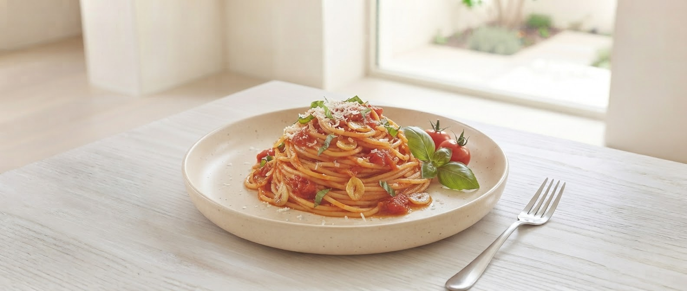

Pasta Menu
50種類以上
Review
★4.0+
Parking
完備
常連客も制覇できない豊富なメニュー。
隠れ家のような空間で、本格パスタを。
SCROLL

20+
Years of
History
多くのイタリアンが生まれては消える中、ア・ラーマが長年愛され続けてきたのは、「いつ来ても、どれを食べても美味しい」という信頼があるから。 熟成されたトマトソースのコク、和風だしの深み、クリーミーなソースの優しさ。 多彩なメニューは、お客様お一人おひとりの「今日食べたい味」に寄り添うための私たちのこだわりです。
伝統のトマトソース
子連れ・家族歓迎
メニューが少なくて
選ぶ楽しみがない
本格的すぎて
子供を連れて行けない
ゆっくり作業や
会話ができる場所がない
50種を超えるパスタメニュー、広々とした駐車場、
そして音が響きにくい落ち着いた店内で、あなただけの最高の時間を。
多くのファンを抱える秘伝の味。セットの新鮮サラダで、まずはそのコクを体験してください。
豊富なメニューに慣れた常連様だけが辿り着くカスタマイズ。あなたの「好み」をぶつけてみてください。
50種類以上のメニューから、今日のあなたにぴったりな一皿を直感で導き出す！アプリ＆店頭パンフレットで近日登場予定です。
お店に向かう車内や待ち時間に診断！おみくじ感覚で今日のラッキーパスタを探せます。
卓上に設置されるフローチャートパンフレット。みんなで「YES/NO」を辿りながら楽しく注文！
本音のクチコミ
「北上でパスタならココ以外考えられません。どれを食べてもハズレなし！」
30代・女性
Verified Reviewer
「店内が静かで落ち着きます。PC作業もできる環境は、地方では本当に貴重です。」
40代・男性
Professional User
「ピザが小振りなのが嬉しい。パスタと一緒にシェアしてペロリと食べられました！」
50代・女性
Family Customer
今日、あなたの「パスタ」の概念が変わる。
住所：〒024-0025 岩手県北上市寿屋敷15−16
定休：火曜日（祝日の場合は翌平日）
決済：各種カード・電子マネー・PayPay対応
※ランチ・ディナーとも駐車場完備しております。
お席のご予約はお早めにお電話ください